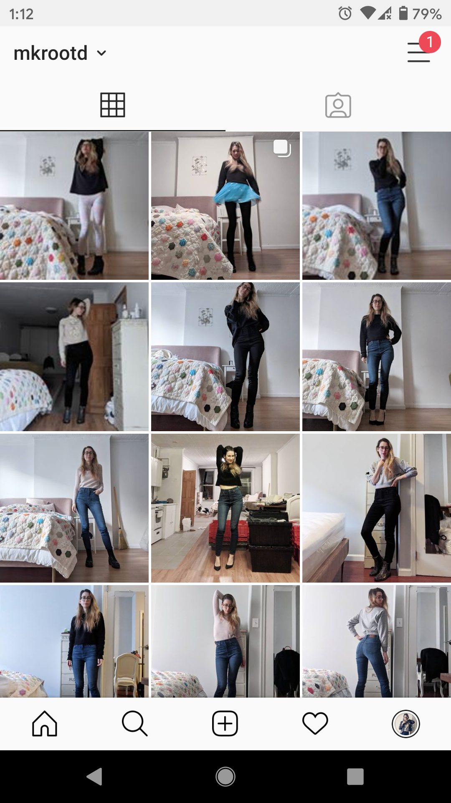
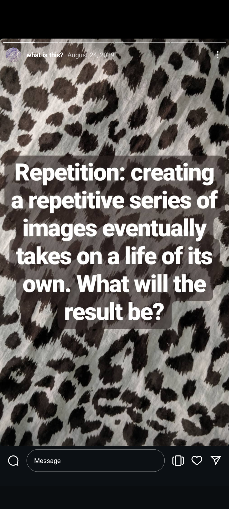
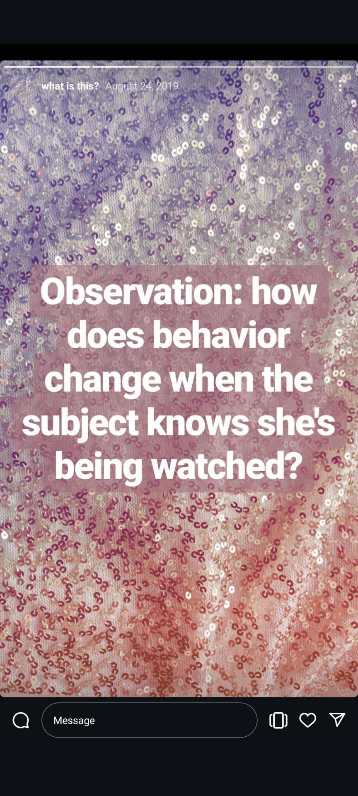
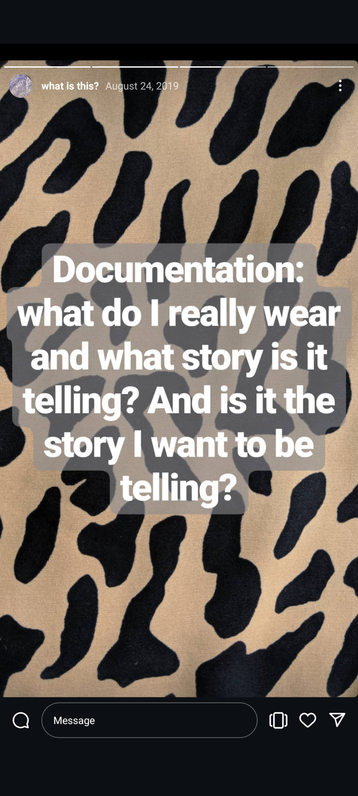
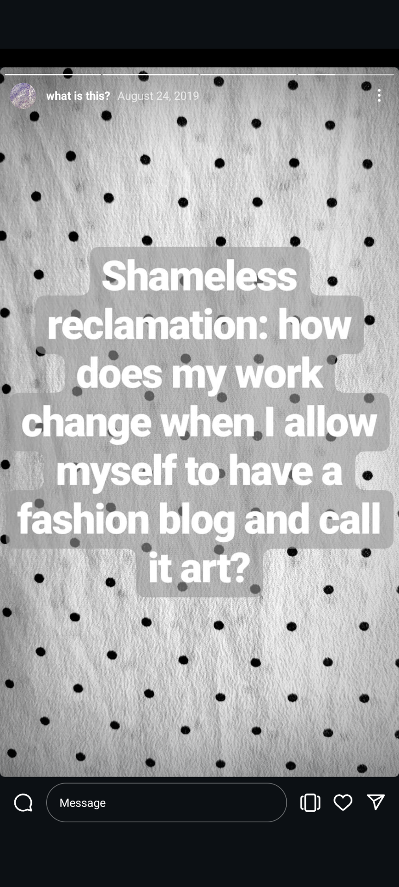
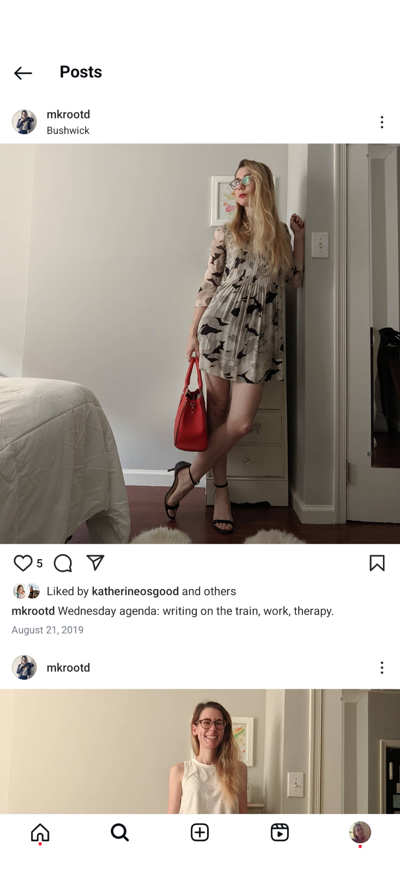
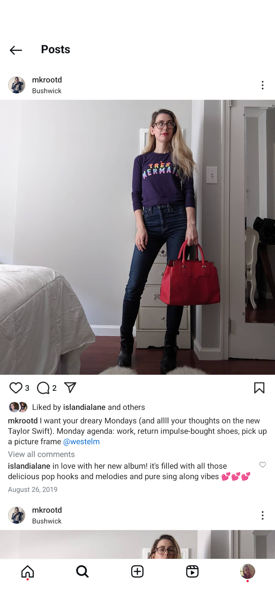
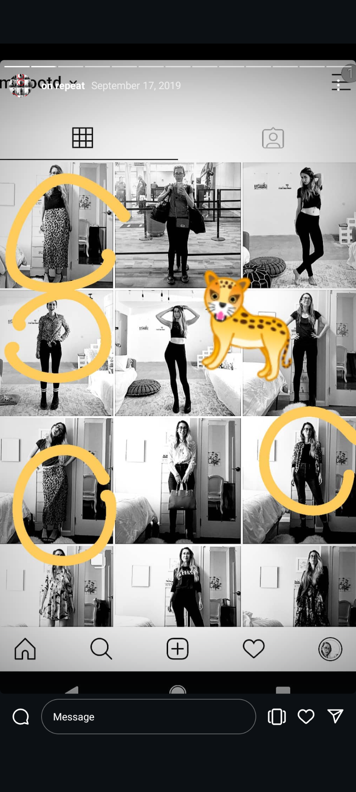
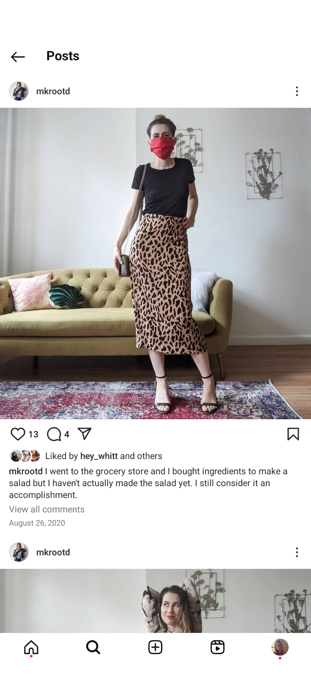
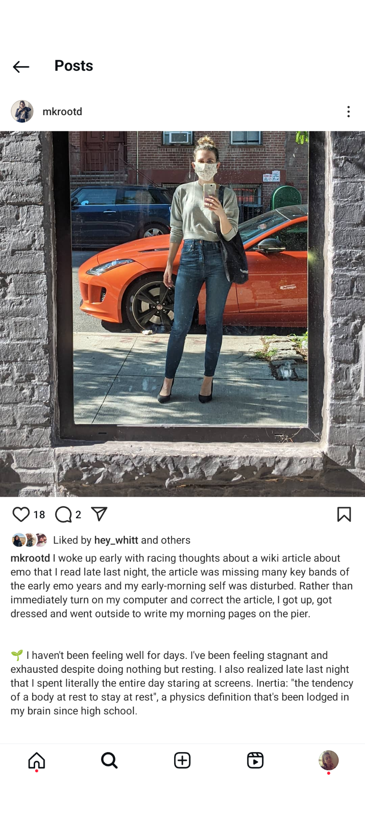

mkrootd
2019-2020

In August 2019, I created a new Instagram account (@mkrootd) to post daily photos of my outfits (Outfit Of The Day). I initiated the project by posting the following images to my Stories:




I established a process for posting that included taking a series of photos of my outfit using the self-timer on my phone camera before I left my apartment for work, and then choosing and posting my favorite photo on my subway commute. The caption would include my "agenda" for the day, and as the practice evolved, I sometimes included details about my mood, music I'd been listening to, or books I'd recently read.


An interesting side effect of posting these quotidian observations was that I started to have more frequent casual conversations with my friends in the comments of my posts. This reminded me of the early days of Instagram, when people were deciding what the new platform would be for.


As I continued to post, I found more ways to expand on the project, including posting a series of videos, and pointing out patterns in my clothing choices in my Stories.


The work was interrupted in 2020 by two events: the global pandemic that changed my dressing habits, and my move to a different apartment where I didn't have an established technique for taking full-body photos of myself. The lack of my ability to practice repetition brought the work to a close.
© 2026 Mary Reed